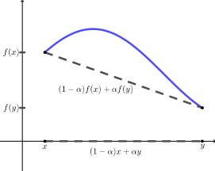

Let \(X\) be a set. Show that the function \(d\) (the discrete metric) defined by
\begin{equation*}
d(x,y) = \begin{cases}0 \amp \text{ if } x=y \\ 1 \amp \text{ if } x \neq y \end{cases}
\end{equation*}
is a metric.
2.
Let \(X = \{1,3,5\} \subset \Z\) and define \(d: X \times X \to \R\) by \(d(x,y) = xy - 1 \pmod{n}\text{.}\) That is, \(d(x,y)\) is the remainder when \(xy - 1\) is divided by \(n\text{.}\)
For each value of \(n\text{,}\) determine if \(d\) defines a metric on \(X\text{.}\) Prove your answers.
The unit circle in \(\R^2\) with metric \(d\) is the set of all points in \(\R^2\) whose distance from the origin is \(1\text{.}\) If we let the distance be less than \(1\text{,}\) then we have what we call an open ball. We can make this same definition in any metric space.
Definition3.11.
Let \((Y, d_Y)\) be a metric space. For any positive real number \(r\text{,}\) the open ball centered at \(b\) of radius \(r\) in \((Y, d_Y)\) is the the set
If \((X,d)\) is a metric space for a given value of \(n\text{,}\) determine all of the open balls in \(X\) centered at \(1\text{.}\) If \((X,d)\) is not a metric space, explain why.
(a)
\(n = 4\)
(b)
\(n = 8\)
3.
Let \(Q\) be the set of all rational numbers in reduced form. A rational number \(\frac{r}{s}\) is in reduced form if \(s \gt 0\) and \(r\) and \(s\) have no common factors larger than \(1\text{.}\) Define \(d : Q \times Q \to \R\) by
A metric allows us to determine which elements in our metric space are ’’close’’ together. Describe the set of elements in \(Q\) that are a distance no more than \(1\) from \(\frac{2}{3}\) using this metric \(d\text{.}\) In other words, describe the open ball centered at \(\frac{2}{3}\) with radius \(1\) (see Definition 3.11).
(c)
If \(a\text{,}\)\(b\text{,}\) and \(c\) are elements of a metric space \((X, d_X)\text{,}\) we say that \(b\) is between \(a\) and \(c\) if \(d_X(a,c) = d_X(a,b) + d_X(b,c)\text{.}\) Using the Euclidean metric on \(\Q\text{,}\) there are infinitely many different rational numbers between \(0\) and \(1\) (the rational numbers between \(0\) and \(1\) that lie on the Euclidean line through \(0\) and \(1\text{.}\) Describe all of the points in \((\Q,d)\) that are between \(0\) and \(1\text{.}\)
4.
Let \((\Q,d)\) be the metric space from Exercise 3. If \(a\text{,}\)\(b\text{,}\) and \(c\) are elements of a metric space \((X, d_X)\text{,}\) we say that \(b\) is between \(a\) and \(c\) if \(d_X(a,c) = d_X(a,b) + d_X(b,c)\text{.}\) Using the Euclidean metric on \(\Q\text{,}\) there are infinitely many different rational numbers between \(0\) and \(1\) (the rational numbers between \(0\) and \(1\) that lie on the Euclidean line through \(0\) and \(1\text{.}\) In this exercise we explore numbers that are between others in the space \((\Q,d)\text{.}\)
(a)
Find all of the elements in \((\Q,d)\) that are between \(0\) and \(1\text{.}\)
(b)
Which is closer to \(0\) in \((\Q,d)\text{:}\)\(1\) or \(\frac{1}{3}\text{?}\)
(c)
Now find all of the elements in \((\Q,d)\) that are between \(0\) and \(\frac{1}{3}\text{.}\)
5.
Prove that the taxicab metric \(d_T\) is a metric on \(\R^n\text{.}\)
6.
Let \(A\) and \(B\) be nonempty finite subsets of \(\R^n\text{,}\) and let \(A+B = \{a+b \mid a \in A, b \in B\}\text{.}\)
(a)
Prove that \(\max (A+B) \leq \max A + \max B\text{.}\)
(b)
Prove that the max metric \(d_M\) is a metric on \(\R^n\text{.}\)
7.
If \(x = (x_1, x_2, \ldots, x_n)\text{,}\) we let \(|x| = \sqrt{x_1^2+x_2^2+ \cdots + x_n^2}\text{.}\) For \(x = (x_1, x_2, \ldots,
x_n)\) and \(y = (y_1, y_2, \ldots y_n)\text{,}\) define \(d_H: \R^n \times \R^n \to \R\) by
Show that \(d_H\) is a metric (called the hub metric).
(b)
(i)
Let \(a = \left(\frac{1}{2}, 0\right)\text{.}\) Explicitly describe which points are in the set \(B(a,1)\) in \((\R^2, d_H)\text{.}\) (See Exercise 2 for the definition of an open ball.)
(ii)
Let \(a = (3,4)\text{.}\) Explicitly describe which points are in the set \(B(a,1)\) in \((\R^2, d_H)\text{.}\)
(iii)
Now explicitly describe all open balls in \((\R^2, d_H)\text{.}\)
8.
Let \(\Z\) be the set of integers and let \(p\) be a prime. For each pair of distinct integers \(m\) and \(n\) there is an integer \(t = t(m,n)\) such that \(|m-n| = k \times p^t\text{,}\) where \(p\) does not divide \(k\text{.}\) For example, if \(p=5\text{,}\)\(m = 34\text{,}\) and \(n = 7\text{,}\) then \(m-n = 27 = 27 \times 5^0\text{.}\) So \(t(43,7) = 27\text{.}\) However, if \(m = 54\) and \(n = 4\text{,}\) then \(m-n = 50 = 2 \times 5^2\text{.}\) So \(t(54,4) = 2\text{.}\) Define \(d: \Z \times \Z \to \R\) by
\begin{equation*}
d(m,n) = \begin{cases}0 \amp \text{ if } m=n \\ \frac{1}{p^t} \amp \text{ if } m \neq n. \end{cases}
\end{equation*}
(a)
Determine the values of \(d(62,170)\) using \(p=3\) and \(d(14008,2003)\) using \(p=7\text{.}\)
(b)
Prove that if \(a\text{,}\)\(b\text{,}\) and \(c\) are in \(\Z\text{,}\) then
Let \(p = 3\text{.}\) Describe the set of all elements \(x\) in \((\Z,d)\) such that \(d(x,0) = 1\text{.}\)
(e)
Continue with \(p=3\text{.}\) Describe the set of all elements \(x\) in \((\Z,d)\) such that \(d(x,0) \lt \frac{1}{2}\text{.}\)
9.
Let \((X, d_X)\) and \((Y, d_Y)\) be metric spaces. We can make the Cartesian product \(X \times Y\) into a metric space by defining a metric \(d'\) on \(X \times Y\) as follows. If \((x_1, y_2)\) and \((x_2, y_2)\) are in \(X \times Y\text{,}\) then
Let \((X, d_X) = (\R, d_E)\) and \((Y, d_Y) = (\R, d)\text{,}\) where \(d\) is the discrete metric. Let
\begin{equation*}
A=\{(x,y) \in \R \times \R \mid -1\leq x \leq 1 \text{ and } -1 \leq y \leq 1\}
\end{equation*}
in \(X \times Y\text{.}\) Let \(a = (0,1)\) in \(X \times Y\text{.}\) Describe, geometrically, what the open ball \(B(a,1)\) looks like in the product space \(X \times Y\text{.}\) Draw a picture of this open ball.
10.
Let \(X = \R^+\text{,}\) the set of positive reals, and define \(d: X \times X \to \R\) by
Show that \(d\) is a metric on \(\R\text{.}\) (Hint: For the triangle inequality, note that \(d(x,y) = f(|x-y|)\) where \(f(t) = \frac{t}{t+1}\text{,}\) and \(f\) is an increasing function.)
12.
Let \((X,d)\) be a metric space and \(k\) be a constant. Define \(kd: X \times X \to \R\) by
for all \(\alpha \in [0,1]\) and all \(x\) and \(y\) in the interval. Note that the expression \((1-\alpha)x + \alpha y\) is linear in \(\alpha\) and is equal to \(x\) when \(\alpha = 0\) and \(y\) when \(\alpha = 1\text{.}\) So \((1-\alpha)x + \alpha y\) is a parameterization of the line segment joining \(x\) to \(y\text{.}\) As Figure 3.12 indicates, equation (3.3) implies that the graph of a concave function \(f\) on any interval \([x,y]\) lies above the secant line joining the points \((x,f(x))\) and \((y,f(y))\text{.}\)

Figure3.12.A concave function.
(a)
Let \(f(x) = -x^2\) map \(\R\) to \(\R\) with the standard Euclidean metric. Show that \(f\) is concave on the interval \([-1,1]\text{.}\)
Consider (3.3) with \(y=0\text{.}\) Then use the fact that \(\frac{a}{a+b}\) is in \([0,1]\text{.}\)
(c)
Suppose \((X,d)\) is a metric space and \(f: [0, \infty) \to [0, \infty)\) is an increasing, concave function such that \(f(x) = 0\) if and only if \(x=0\text{.}\) Prove that \(f \circ d\) is a metric on \(X\text{.}\)
14.
For each of the following, answer true if the statement is always true. If the statement is only sometimes true or never true, answer false and provide a concrete example to illustrate that the statement is false. If a statement is true, explain why.
(a)
The function \(d: \R \times \R \to \R\) defined by \(d(x,y) = (x-y)^2\) is a metric on \(\R\text{.}\)
(b)
Every nonempty set can be made into a metric space.
(c)
It is possible to define an infinite number of metrics on every set containing at least two elements.
(d)
Let \((X, d_X)\) and \((Y, d_Y)\) be metric spaces with \(|X| \geq 2\text{.}\) Then the function \(d: X \times Y \to \R\) defined by \(d((a,b),(c,d)) = d_X(a,c)d_Y(b,d)\) is a metric on \(X \times Y\text{.}\)
(e)
Let \((X,d)\) be a metric space. If \(X\) is infinite, then the range of \(d\) is also an infinite set.